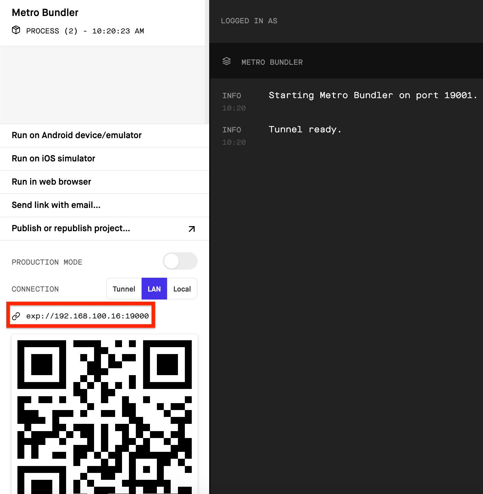
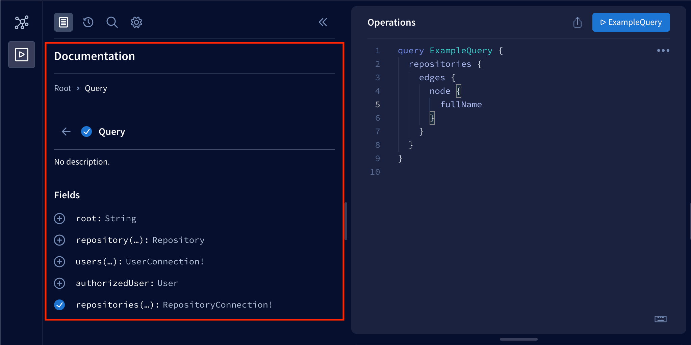
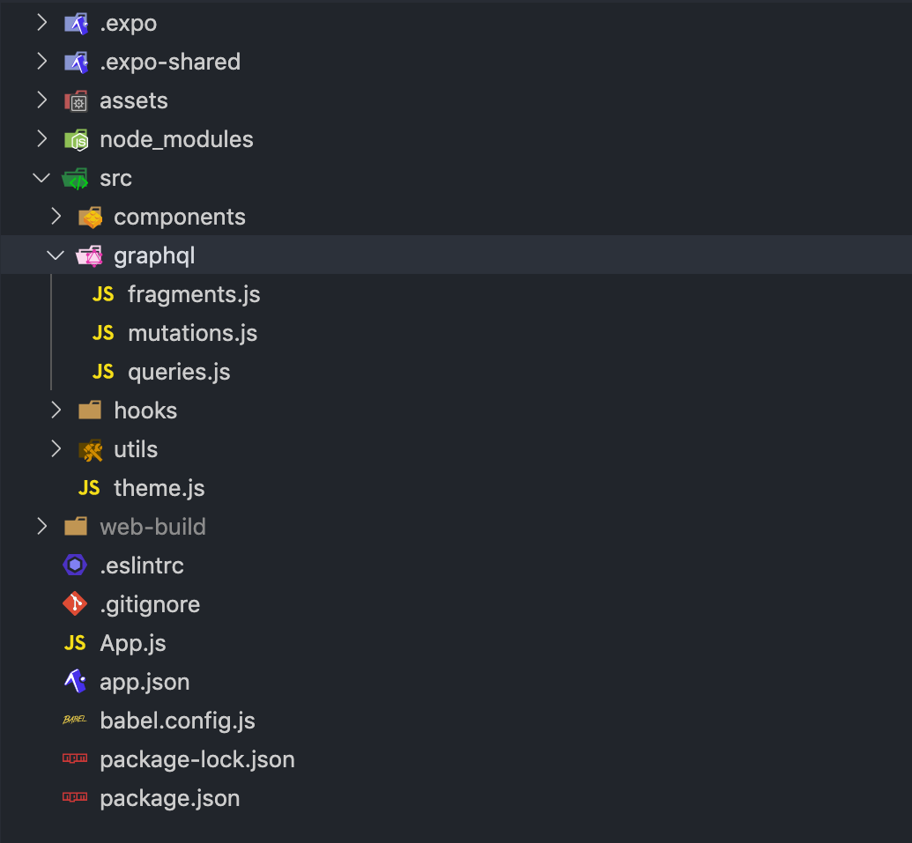

到目前为止，我们已经在没有任何实际服务器通信的情况下对我们的应用实现了一些功能。例如，我们实现的已审查的存储库列表使用了模拟数据，而且登录表单没有将用户的凭证发送到任何认证终端。在本节中，我们将学习如何使用HTTP请求与服务器通信，如何在React Native应用中使用Apollo客户端，以及如何在用户的设备中存储数据。
很快我们将学习如何在我们的应用中与服务器通信。在这之前，我们需要一个服务器来进行通信。为此，我们在rate-repository-api仓库中有一个完整的服务器实现。在这一部分，rate-repository-api服务器满足了我们应用的所有API需求。它使用SQLite数据库，不需要任何设置，并提供一个Apollo GraphQL API和一些REST API端点。
在进一步了解材料之前，请按照版本库的README中的设置说明来设置rate-repository-api服务器。注意，如果你使用模拟器进行开发，建议将服务器和模拟器运行在同一台电脑上。这样可以大大缓解网络请求。
HTTP requests
React Native提供了Fetch API用于在我们的应用中进行HTTP请求。React Native还支持古老的XMLHttpRequest API，这使得我们可以使用第三方库，如Axios。这些API与浏览器环境中的API是一样的，它们是全局可用的，不需要导入。
同时使用过Fetch API和XMLHttpRequest API的人很可能同意，Fetch API更容易使用，也更现代。然而，这并不意味着XMLHttpRequest API没有它的用途。为了简单起见，我们将在我们的例子中只使用Fetch API。
使用Fetch API发送HTTP请求可以通过fetch函数完成。该函数的第一个参数是资源的URL。
fetch('https://my-api.com/get-end-point');
默认的请求方法是GET。fetch函数的第二个参数是一个选项对象，你可以用它来指定一个不同的请求方法、请求头或请求体。
fetch('https://my-api.com/post-end-point', {
method: 'POST',
headers: {
Accept: 'application/json',
'Content-Type': 'application/json',
},
body: JSON.stringify({
firstParam: 'firstValue',
secondParam: 'secondValue',
}),
});
注意，这些URL是编造的，不会（很可能）对你的请求发出响应。与Axios相比，Fetch API的操作水平要低一些。例如，没有任何请求或响应体的序列化和解析。这意味着你必须自己设置Content-Type头并使用JSON.stringify方法来序列化请求体。
fetch函数返回一个 promise ，它解决了一个Response 对象。请注意，错误状态代码如400和500 不会被拒绝，例如在Axios中。如果是JSON格式的响应，我们可以使用Response.json方法解析响应体。
const fetchMovies = async () => {
const response = await fetch('https://reactnative.dev/movies.json');
const json = await response.json();
return json;
};
关于Fetch API的更详细介绍，请阅读MDN网络文档中的使用Fetch文章。
接下来，让我们在实践中尝试Fetch API。Rate-repository-api 服务器提供了一个端点，用于返回一个分页的已审核仓库的列表。一旦服务器运行，你应该能够访问http://localhost:5000/api/repositories这个端点。数据是以常见的基于游标的分页格式分页的。实际的存储库数据在node键后面的edges阵列中。
不幸的是，我们不能通过使用http://localhost:5000/api/repositories URL在我们的应用中直接访问该服务器。为了在我们的应用中向这个端点发出请求，我们需要使用其本地网络中的IP地址访问服务器。要知道它是什么，通过运行npm start打开Expo开发工具。在开发工具中，你应该能够看到二维码上面有一个以exp://开头的URL。

复制exp://和:之间的IP地址，在这个例子中是192.168.100.16。构建一个格式为http://:5000/api/repositories的URL，并在浏览器中打开它。你应该看到与localhost URL相同的响应。
现在我们知道了端点的URL，让我们在审查的存储库列表中使用服务器提供的实际数据。我们目前正在使用存储在repositories变量中的模拟数据。删除repositories变量，用components目录下的RepositoryList.jsx文件中的这段代码替换模拟数据的使用。
import { useState, useEffect } from 'react';
// ...
const RepositoryList = () => {
const [repositories, setRepositories] = useState();
const fetchRepositories = async () => {
// Replace the IP address part with your own IP address!
const response = await fetch('http://192.168.100.16:5000/api/repositories');
const json = await response.json();
console.log(json);
setRepositories(json);
};
useEffect(() => {
fetchRepositories();
}, []);
// Get the nodes from the edges array
const repositoryNodes = repositories
? repositories.edges.map(edge => edge.node)
: [];
return (
<FlatList
data={repositoryNodes}
// Other props
/>
);
};
export default RepositoryList;
我们使用React的useState钩子来维护存储库列表状态，并使用useEffect钩子在RepositoryList组件被安装时调用fetchRepositories函数。我们将实际的存储库提取到repositoryNodes变量中，并用它替换FlatList组件dataprop中先前使用的repositories变量。现在你应该能够在审查的存储库列表中看到实际的服务器提供的数据。
记录服务器的响应通常是个好主意，以便能够像我们在fetchRepositories函数中那样检查它。如果你像我们在查看日志一节中学到的那样，导航到设备的日志，你应该能够在Expo开发工具中看到这个日志信息。如果你使用世博会的移动应用进行开发，并且网络请求失败，请确保你用来运行服务器的电脑和你的手机都连接到同一个Wi-Fi网络。如果这是不可能的，要么在服务器运行的同一台电脑上使用模拟器，要么设置一个隧道到本地主机，例如，使用Ngrok。
目前在RepositoryList组件中的数据获取代码可以做一些重构。例如，该组件知道网络请求的细节，如终端的URL。此外，获取数据的代码有很多重用的可能性。让我们重构该组件的代码，将数据获取代码提取到它自己的钩子中。在src目录下创建一个hooks目录，在该hooks目录下创建一个useRepositories.js文件，内容如下。
import { useState, useEffect } from 'react';
const useRepositories = () => {
const [repositories, setRepositories] = useState();
const [loading, setLoading] = useState(false);
const fetchRepositories = async () => {
setLoading(true);
// Replace the IP address part with your own IP address!
const response = await fetch('http://192.168.100.16:5000/api/repositories');
const json = await response.json();
setLoading(false);
setRepositories(json);
};
useEffect(() => {
fetchRepositories();
}, []);
return { repositories, loading, refetch: fetchRepositories };
};
export default useRepositories;
现在我们有了一个干净的抽象来获取审查过的仓库，让我们在RepositoryList组件中使用useRepositories钩子。
// ...
import useRepositories from '../hooks/useRepositories'; // highlight-line
const RepositoryList = () => {
const { repositories } = useRepositories(); // highlight-line
const repositoryNodes = repositories
? repositories.edges.map(edge => edge.node)
: [];
return (
<FlatList
data={repositoryNodes}
// Other props
/>
);
};
export default RepositoryList;
就这样，现在RepositoryList组件不再知道获取存储库的方式。也许在未来，我们会通过GraphQL API而不是REST API来获取它们。我们将看看会发生什么。
GraphQL and Apollo client
在第8章节中，我们了解了GraphQL以及如何在React应用中使用Apollo客户端将GraphQL查询发送到Apollo服务器。好消息是，我们可以在React Native应用中使用Apollo客户端，就像我们在React Web应用中一样。
如前所述，rate-repository-api服务器提供了一个GraphQL API，它是用Apollo服务器实现的。一旦服务器运行，你可以在http://localhost:4000访问[Apollo沙盒]。Apollo Sandbox是一个用于进行GraphQL查询和检查GraphQL APIs模式和文档的工具。如果你需要在你的应用中发送一个查询，总是在代码中实施之前先用Apollo Sandbox测试。在Apollo沙盒中调试查询中可能出现的问题要比在应用中调试容易得多。如果你不确定有哪些可用的查询或如何使用它们，你可以查看操作编辑器旁边的文档。

在我们的React Native应用中，我们将使用与第八章节相同的@apollo/client库。让我们开始安装这个库和graphql库，它是作为一个对等依赖的需要。
npm install @apollo/client graphql
在我们开始使用Apollo客户端之前，我们需要稍微配置一下Metro捆绑器，以便它能处理Apollo客户端使用的.cjs文件扩展。首先，让我们安装@expo/metro-config包，它有默认的Metro配置。
npm install @expo/metro-config
然后，我们可以在项目根目录下的metro.config.js中添加以下配置。
const { getDefaultConfig } = require('@expo/metro-config');
const defaultConfig = getDefaultConfig(__dirname);
defaultConfig.resolver.sourceExts.push('cjs');
module.exports = defaultConfig;
重新启动Expo开发工具，以便配置中的变化被应用。
现在Metro配置已经就绪，让我们创建一个实用的函数，用所需的配置创建Apollo客户端。在src目录下创建一个utils目录，在该utils目录下创建一个apolloClient.js文件。在该文件中配置Apollo客户端以连接到Apollo服务器。
import { ApolloClient, InMemoryCache, createHttpLink } from '@apollo/client';
const httpLink = createHttpLink({
// Replace the IP address part with your own IP address!
uri: 'http://192.168.100.16:4000/graphql',
});
const createApolloClient = () => {
return new ApolloClient({
link: httpLink,
cache: new InMemoryCache(),
});
};
export default createApolloClient;
用于连接Apollo服务器的URL与你在Fetch API中使用的URL相同，期望端口为4000，路径为/graphql。最后，我们需要使用ApolloProvider 上下文提供Apollo客户端。我们将把它添加到App.js文件中的App组件。
import { NativeRouter } from 'react-router-native';
import { ApolloProvider } from '@apollo/client/react'; // highlight-line
import Main from './src/components/Main';
import createApolloClient from './src/utils/apolloClient'; // highlight-line
const apolloClient = createApolloClient(); // highlight-line
const App = () => {
return (
<NativeRouter>
<ApolloProvider client={apolloClient}> // highlight-line
<Main />
</ApolloProvider> // highlight-line
</NativeRouter>
);
};
export default App;
Organizing GraphQL related code
在你的应用中如何组织GraphQL相关的代码，这取决于你。然而，为了有一个参考结构，让我们看看一个相当简单和有效的方法来组织GraphQL相关的代码。在这个结构中，我们在自己的文件中定义查询、改变、片段，可能还有其他实体。这些文件都位于同一个目录下。下面是一个结构的例子，你可以用它来开始。

你可以从@apollo/client库导入用于定义GraphQL查询的gql模板字面标签。如果我们按照上面建议的结构，我们可以在graphql目录下有一个queries.js文件，用于我们应用的GraphQL查询。每个查询都可以存储在一个变量中，并像这样导出。
import { gql } from '@apollo/client';
export const GET_REPOSITORIES = gql`
query {
repositories {
${/* ... */}
}
}
`;
// other queries...
我们可以导入这些变量，并像这样用useQuery挂钩来使用它们。
import { useQuery } from '@apollo/client/react';
import { GET_REPOSITORIES } from '../graphql/queries';
const Component = () => {
const { data, error, loading } = useQuery(GET_REPOSITORIES);
// ...
};
组织改变的情况也是如此。唯一的区别是我们在一个不同的文件中定义它们，mutations.js。建议在查询中使用fragments，以避免重复输入相同的字段。
Evolving the structure
一旦我们的应用变大，有时可能会出现某些文件变大而无法管理。例如，我们有组件A，它渲染了组件B和C。所有这些组件都定义在A.jsx目录下的components文件中。我们想把组件B和C提取到它们自己的文件B.jsx和C.jsx中，而无需进行重大的重构。我们有两个选择。
- 在components目录下创建文件B.jsx和C.jsx。这将导致以下结构。
components/
A.jsx
B.jsx
C.jsx
...
- 在components目录下创建一个目录A，并在那里创建文件B.jsx和C.jsx。为了避免破坏导入A.jsx文件的组件，将A.jsx文件移至A目录，并将其重命名为index.jsx。这样就形成了以下结构。
components/
A/
B.jsx
C.jsx
index.jsx
...
第一种方案相当得体，然而，如果组件B和C在组件A之外不能重复使用，那么将它们作为单独的文件加入到组件目录中，使之膨胀是没有用的。第二种方案是相当模块化的，并且不会破坏任何导入，因为导入诸如./A的路径会同时匹配A.jsx和A/index.jsx。
Environment variables
每个应用都很可能在一个以上的环境中运行。这些环境的两个明显的候选者是开发环境和生产环境。在这两个环境中，开发环境是我们现在正在运行的应用。不同的环境通常有不同的依赖性，例如，我们在本地开发的服务器可能使用本地数据库，而部署到生产环境的服务器则使用生产数据库。为了使代码独立于环境，我们需要将这些依赖关系参数化。目前，我们在应用中使用一个非常依赖环境的硬编码值：服务器的URL。
我们之前已经知道，我们可以为运行中的程序提供环境变量。这些变量可以在命令行中定义，或者使用环境配置文件，如.env文件和第三方库，如Dotenv。不幸的是，React Native没有对环境变量的直接支持。然而，我们可以在运行时从我们的JavaScript代码中访问app.json文件中定义的Expo配置。这个配置可以用来定义和访问与环境有关的变量。
配置可以通过从expo-constants模块导入Constants常量来访问，我们之前已经做过几次。一旦导入，Constants.manifest属性将包含配置。让我们通过在App组件中记录Constants.manifest来试试。
import { NativeRouter } from 'react-router-native';
import { ApolloProvider } from '@apollo/client/react';
import Constants from 'expo-constants'; // highlight-line
import Main from './src/components/Main';
import createApolloClient from './src/utils/apolloClient';
const apolloClient = createApolloClient();
const App = () => {
console.log(Constants.manifest); // highlight-line
return (
<NativeRouter>
<ApolloProvider client={apolloClient}>
<Main />
</ApolloProvider>
</NativeRouter>
);
};
export default App;
你现在应该在日志中看到配置了。
下一步是在我们的应用中使用配置来定义环境相关的变量。让我们先把app.json文件重命名为app.config.js。一旦文件被重命名，我们就可以在配置文件中使用JavaScript。改变文件内容，使之前的对象。
{
"expo": {
"name": "rate-repository-app",
// rest of the configuration...
}
}
变成一个出口，其中包含expo属性的内容。
export default {
name: 'rate-repository-app',
// rest of the configuration...
};
Expo在配置中为任何特定应用的配置保留了一个extra属性。为了了解这一点，让我们在我们应用的配置中添加一个env变量。
export default {
name: 'rate-repository-app',
// rest of the configuration...
// highlight-start
extra: {
env: 'development'
},
// highlight-end
};
重新启动Expo开发工具以应用这些变化，你应该看到Constants.manifest属性的值已经改变，现在包括了包含我们应用特定配置的extra属性。现在，env变量的值可以通过Constants.manifest.extra.env属性访问。
因为使用硬编码的配置有点傻，所以让我们使用环境变量来代替。
export default {
name: 'rate-repository-app',
// rest of the configuration...
// highlight-start
extra: {
env: process.env.ENV,
},
// highlight-end
};
正如我们所学到的，我们可以通过命令行来设置环境变量的值，方法是在实际命令前定义变量的名称和值。举个例子，启动Expo开发工具，将环境变量ENV设置为test，像这样。
如果你看一下日志，你应该看到Constants.manifest.extra.env属性已经改变。
我们也可以从.env文件中加载环境变量，正如我们在前面的部分所学到的。首先，我们需要安装Dotenv库。
接下来，在我们项目的根目录下添加一个.env文件，内容如下。
最后，在app.config.js文件中导入该库。
import 'dotenv/config'; // highlight-line
export default {
name: 'rate-repository-app',
// rest of the configuration...
extra: {
env: process.env.ENV,
},
};
你需要重新启动Expo开发工具来应用你对.env文件所做的修改。
注意，把敏感数据放到应用的配置中是一个好主意。原因是，一旦用户下载了你的应用，至少在理论上，他们可以对你的应用进行逆向工程，找出你存储在代码中的敏感数据。
Storing data in the user's device
有的时候我们需要在用户的设备中存储一些持久的数据片段。其中一个常见的场景是存储用户的认证令牌，这样即使用户关闭并重新打开我们的应用，我们也可以检索到它。在Web开发中，我们使用浏览器的localStorage对象来实现这种功能。React Native提供了类似的持久化存储，即AsyncStorage。
我们可以使用expo install命令来安装适合我们Expo SDK版本的@react-native-async-storage/async-storage包。
expo install @react-native-async-storage/async-storage
AsyncStorage的API在许多方面与localStorage的API相同。它们都是具有类似方法的键值存储。两者之间最大的区别是，正如其名称所暗示的，AsyncStorage的操作是异步的。
因为AsyncStorage在全局命名空间中对字符串键进行操作，所以为其操作创建一个简单的抽象是个好主意。这个抽象可以用一个class来实现，例如。作为一个例子，我们可以实现一个购物车存储，用于存储用户想要购买的产品。
import AsyncStorage from '@react-native-async-storage/async-storage';
class ShoppingCartStorage {
constructor(namespace = 'shoppingCart') {
this.namespace = namespace;
}
async getProducts() {
const rawProducts = await AsyncStorage.getItem(
`${this.namespace}:products`,
);
return rawProducts ? JSON.parse(rawProducts) : [];
}
async addProduct(productId) {
const currentProducts = await this.getProducts();
const newProducts = [...currentProducts, productId];
await AsyncStorage.setItem(
`${this.namespace}:products`,
JSON.stringify(newProducts),
);
}
async clearProducts() {
await AsyncStorage.removeItem(`${this.namespace}:products`);
}
}
const doShopping = async () => {
const shoppingCartA = new ShoppingCartStorage('shoppingCartA');
const shoppingCartB = new ShoppingCartStorage('shoppingCartB');
await shoppingCartA.addProduct('chips');
await shoppingCartA.addProduct('soda');
await shoppingCartB.addProduct('milk');
const productsA = await shoppingCartA.getProducts();
const productsB = await shoppingCartB.getProducts();
console.log(productsA, productsB);
await shoppingCartA.clearProducts();
await shoppingCartB.clearProducts();
};
doShopping();
因为AsyncStorage键是全局的，所以通常为键添加一个命名空间是个好主意。在这种情况下，命名空间只是我们为存储抽象的键提供的一个前缀。使用命名空间可以防止存储的键与其他AsyncStorage键发生冲突。在这个例子中，命名空间被定义为构造函数的参数，我们使用namespace:key格式来表示键。
我们可以使用AsyncStorage.setItem方法向存储添加一个项目。该方法的第一个参数是项目的键，第二个参数是其值。值必须是一个字符串，所以我们需要像使用JSON.stringify方法那样对非字符串值进行序列化。AsyncStorage.getItem方法可以用来从存储中获取一个项目。该方法的参数是项目的键，其值将被解析。AsyncStorage.removeItem方法可以用来从存储中移除具有所提供的键的项目。
NB: SecureStore是类似于AsyncStorage的持久化存储，但它对存储的数据进行加密。这使得它更适合于存储更敏感的数据，如用户的信用卡号码。
Exercises 10.13. - 10.14.
Exercise 10.13: the sign in form mutation
目前的签到表格的实现对提交的用户凭证没有什么作用。让我们在这个练习中做一些事情。首先，阅读rate-repository-api服务器的认证文档并在Apollo沙盒中测试所提供的查询和改变。如果数据库没有任何用户，你可以用一些种子数据填充数据库。这方面的说明可以在README的入门部分找到。
一旦你搞清楚了认证的工作方式，在hooks目录下创建一个_useSignIn.js_文件。在该文件中实现一个useSignIn钩子，使用useMutation钩子发送authenticate改变。请注意，authenticate改变有一个单一参数，叫做credentials，它的类型是AuthenticateInput。这个输入类型包含用户名和密码字段。
钩子的返回值应该是一个元组[signIn, result]，其中result是改变的结果，因为它是由useMutation钩子返回的，signIn是运行改变的函数，有{ username, password }对象参数。提示：不要直接将改变函数传递给返回值。相反，返回一个调用改变函数的函数，像这样。
const useSignIn = () => {
const [mutate, result] = useMutation(/* mutation arguments */);
const signIn = async ({ username, password }) => {
// call the mutate function here with the right arguments
};
return [signIn, result];
};
一旦钩子实现，在SignIn组件的onSubmit回调中使用它，例如像这样。
const SignIn = () => {
const [signIn] = useSignIn();
const onSubmit = async (values) => {
const { username, password } = values;
try {
const { data } = await signIn({ username, password });
console.log(data);
} catch (e) {
console.log(e);
}
};
// ...
};
一旦你能在签到表格提交后记录用户的authenticate改变结果，这个练习就完成了。改变的结果应该包含用户的访问令牌。
Exercise 10.14: storing the access token step1
现在我们可以获得访问令牌，我们需要存储它。在utils目录下创建一个文件authStorage.js，内容如下。
import AsyncStorage from '@react-native-async-storage/async-storage';
class AuthStorage {
constructor(namespace = 'auth') {
this.namespace = namespace;
}
getAccessToken() {
// Get the access token for the storage
}
setAccessToken(accessToken) {
// Add the access token to the storage
}
removeAccessToken() {
// Remove the access token from the storage
}
}
export default AuthStorage;
接下来，实现方法AuthStorage.getAccessToken、AuthStorage.setAccessToken和AuthStorage.removeAccessToken。使用namespace变量给你的键一个命名空间，就像我们在前面的例子中做的那样。
Enhancing Apollo Client's requests
现在我们已经实现了用于存储用户访问令牌的存储，是时候开始使用它了。在App组件中初始化存储。
import { NativeRouter } from 'react-router-native';
import { ApolloProvider } from '@apollo/client/react';
import Main from './src/components/Main';
import createApolloClient from './src/utils/apolloClient';
import AuthStorage from './src/utils/authStorage'; // highlight-line
const authStorage = new AuthStorage(); // highlight-line
const apolloClient = createApolloClient(authStorage); // highlight-line
const App = () => {
return (
<NativeRouter>
<ApolloProvider client={apolloClient}>
<Main />
</ApolloProvider>
</NativeRouter>
);
};
export default App;
我们还为createApolloClient函数提供了存储实例作为一个参数。这是因为接下来，我们将在每个请求中向Apollo服务器发送访问令牌。Apollo服务器将期望访问令牌存在于Authorization头中，格式为Bearer 。我们可以通过使用setContext函数增强Apollo客户端的请求。让我们通过修改apolloClient.js文件中的createApolloClient函数将访问令牌发送给Apollo服务器。
import { ApolloClient, InMemoryCache, createHttpLink } from '@apollo/client';
import Constants from 'expo-constants';
import { setContext } from '@apollo/client/link/context'; // highlight-line
// You might need to change this depending on how you have configured the Apollo Server's URI
const { apolloUri } = Constants.manifest.extra;
const httpLink = createHttpLink({
uri: apolloUri,
});
// highlight-start
const createApolloClient = (authStorage) => {
const authLink = setContext(async (_, { headers }) => {
try {
const accessToken = await authStorage.getAccessToken();
return {
headers: {
...headers,
authorization: accessToken ? `Bearer ${accessToken}` : '',
},
};
} catch (e) {
console.log(e);
return {
headers,
};
}
});
return new ApolloClient({
link: authLink.concat(httpLink),
cache: new InMemoryCache(),
});
};
// highlight-end
export default createApolloClient;
Using React Context for dependency injection
签到拼图的最后一块是将存储整合到useSignIn挂钩。为了实现这一点，挂钩必须能够访问我们在App组件中初始化的token存储实例。React Context正是我们需要的工作工具。在src目录下创建一个目录contexts。在该目录中创建一个文件AuthStorageContext.js，内容如下。
import React from 'react';
const AuthStorageContext = React.createContext();
export default AuthStorageContext;
现在我们可以使用AuthStorageContext.Provider来为上下文的后代提供存储实例。让我们把它添加到App组件中。
import { NativeRouter } from 'react-router-native';
import { ApolloProvider } from '@apollo/client/react';
import Main from './src/components/Main';
import createApolloClient from './src/utils/apolloClient';
import AuthStorage from './src/utils/authStorage';
import AuthStorageContext from './src/contexts/AuthStorageContext'; // highlight-line
const authStorage = new AuthStorage();
const apolloClient = createApolloClient(authStorage);
const App = () => {
return (
<NativeRouter>
<ApolloProvider client={apolloClient}>
<AuthStorageContext.Provider value={authStorage}> // highlight-line
<Main />
</AuthStorageContext.Provider> // highlight-line
</ApolloProvider>
</NativeRouter>
);
};
export default App;
在useSignIn钩中访问存储实例，现在可以使用React's useContext钩，像这样。
// ...
import { useContext } from 'react'; // highlight-line
import AuthStorageContext from '../contexts/AuthStorageContext'; //highlight-line
const useSignIn = () => {
const authStorage = useContext(AuthStorageContext); //highlight-line
// ...
};
注意，使用useContext钩子访问一个上下文的值，只有当useContext钩子被用于一个Context.Provider组件的后裔的组件时，才会生效。
用useContext(AuthStorageContext)访问AuthStorage实例是相当啰嗦的，而且会暴露实现的细节。让我们通过在hooks目录下的useAuthStorage.js文件中实现一个useAuthStorage钩子来改进。
import { useContext } from 'react';
import AuthStorageContext from '../contexts/AuthStorageContext';
const useAuthStorage = () => {
return useContext(AuthStorageContext);
};
export default useAuthStorage;
该钩子的实现相当简单，但它提高了使用它的钩子和组件的可读性和可维护性。我们可以用这个钩子来重构useSignIn钩子，像这样。
// ...
import useAuthStorage from '../hooks/useAuthStorage'; // highlight-line
const useSignIn = () => {
const authStorage = useAuthStorage(); //highlight-line
// ...
};
为组件的后代提供数据的能力为React Context打开了大量的用例。要了解更多关于这些用例的信息，请阅读Kent C. Dodds的启发性文章How to use React Context effectively，了解如何将useReducer钩子与上下文结合起来，实现状态管理。你可能会在接下来的练习中找到使用这些知识的方法。